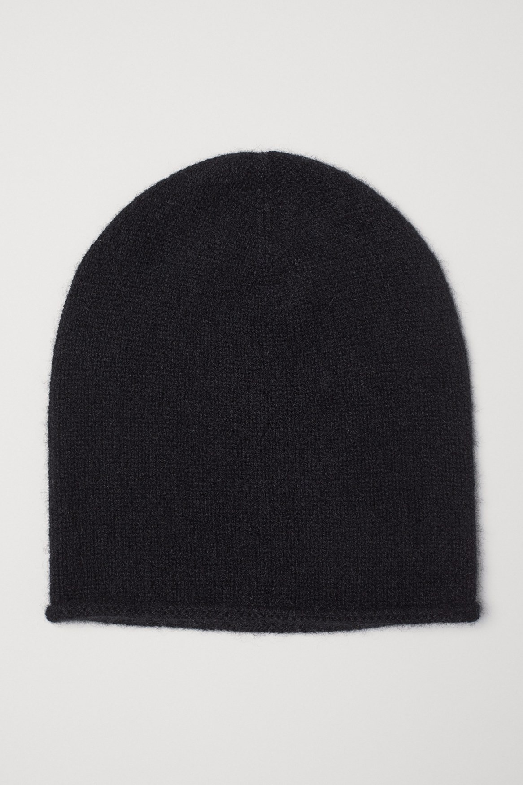
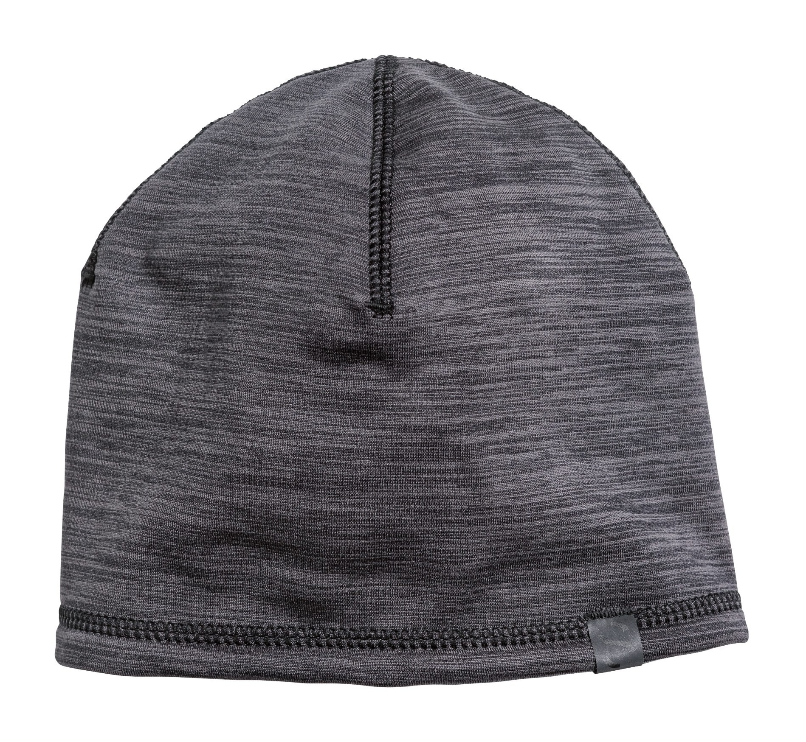
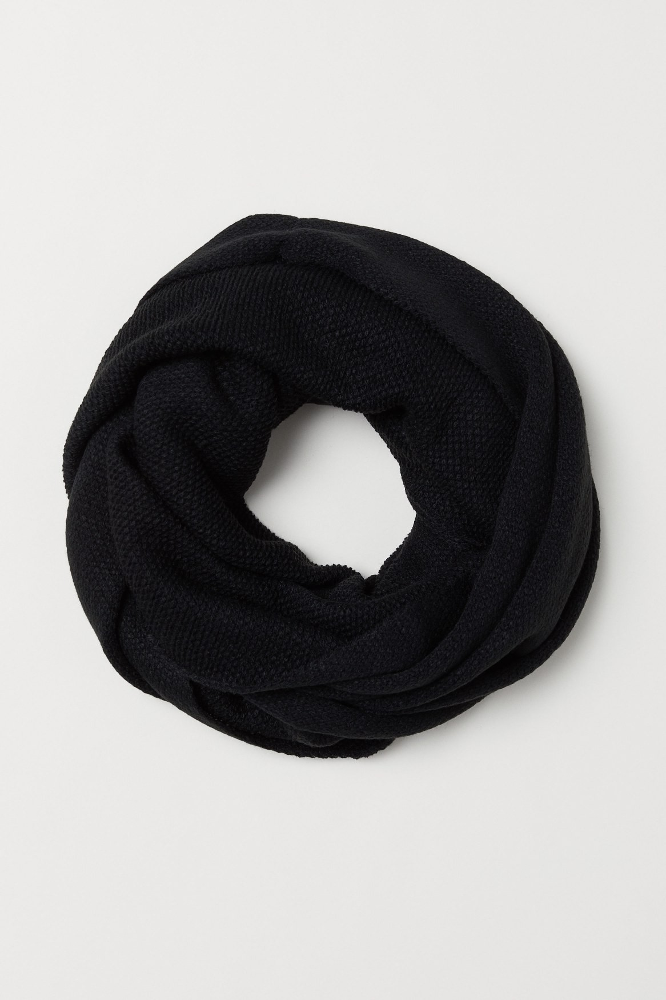

Part 1 of 3
Building a benchmark for product image search
How well do frontier models actually search a clothing catalog?
I recently read turbopuffer’s SID-1 post, where they trained a search model with reinforcement learning that outperformed GPT-5 on retrieval while also running faster and at a lower cost. We had started using SID at work around the same time, and because the improvement was noticeable in practice, I became curious about what the model had actually learned and how much of its advantage came from the search policy rather than the underlying retrieval system.
Most retrieval research focuses on text, but I wanted to explore how these systems behave when relevance depends largely on visual information. Product catalog search is a useful setting for this because descriptions are often sparse or generic; a listing might say only “trousers in a cotton blend,” while the image conveys richer details such as the cut, silhouette and colour.
This post establishes the baseline for that experiment by introducing the benchmark and evaluating frontier and open-weight models through a shared search harness.
TL;DR
I built the benchmark using 3,081 Zara and H&M products from two Kaggle datasets, then generated 96 search queries from their photographs. Every model was evaluated against the same catalog and retrieval indexes, with access to four search tools: keyword_search over BM25, semantic_search over text embeddings, image_text_search over product-image embeddings, and similar_images for photo-to-photo retrieval. Here are the results:
| Model | nDCG | Recall | Precision | Avg. turns | Avg. tool calls | Latency | Cost per query |
|---|---|---|---|---|---|---|---|
| Claude Opus 5 xhigh | 0.906 | 0.895 | 0.833 | 6.1 | 18.8 | 52s | 56.4c |
| Gemini 3.6 Flash high | 0.885 | 0.885 | 0.807 | 10.7 | 31.0 | 69s | 37.6c |
| GPT-5.6 high | 0.833 | 0.873 | 0.904 | 6.3 | 23.6 | 45s | 62.2c |
| Qwen3.7-plus high | 0.779 | 0.836 | 0.846 | 6.7 | 18.1 | 20s | 5.2c |
| Inkling high | 0.751 | 0.814 | 0.913 | 7.5 | 11.0 | 15s | 7.7c |
| Inkling-small high | 0.735 | 0.785 | 0.857 | 11.7 | 11.9 | 22s | 5.0c |
| Qwen3.6-35B-A3B none | 0.727 | 0.802 | 0.898 | 5.5 | 10.4 | 24s | 1.0c |
| Qwen3.5-9B none | 0.689 | 0.757 | 0.918 | 6.9 | 13.7 | 61s | 0.9c |
Observations
- Claude Opus 5 reaches 0.906 followed by Gemini 3.6 Flash. Since the retrieval infrastructure remains fixed, most of the gain comes from the model issuing multiple searches and reformulating its queries.
- The way models use the available tools is also very important.
keyword_searchwas the most frequently called tool across the evaluation, even thoughimage_text_searchwas substantially stronger when tested on its own. Opus directed roughly 30% of its search calls to the visual index, whereas the smaller models relied much more heavily on keyword search, even for queries whose relevant attributes were visible in the photograph but absent from the product description. - The difference between Opus and the smaller models is primarily one of coverage rather than candidate quality. Qwen3.5-9B achieved higher precision than Opus, but returned only around ~7 products per query while Opus returned around 19. The products Qwen selected were usually relevant, but it stopped searching before recovering enough of the correct set, which caused it to lose substantially on recall and nDCG.
- This creates a clear cost and quality trade-off. Opus remains the strongest system, but at approximately 56 cents per query it costs around 60 times more than Qwen3.5-9B, which costs just under one cent.
The rest of this post explains how I built and evaluated the benchmark, and then examines how different models search to understand where the gains come from.
Task generation
Building the catalog
I assembled the catalog from two public Kaggle datasets:
- Zara products: 2,000 items.
- H&M Personalized Fashion Recommendations: 1,081 items.
Before choosing the indexes, I looked at what the catalog text actually contained. The Zara and H&M descriptions were written for product listings, not for exhaustive visual search. They usually named the garment and a few material or construction details, but often left out things visible in the image, such as the exact colour, silhouette or small design features. That made visual retrieval a useful test case, but it also limits what the results can tell us: an image index may look better partly because the text leaves out information.
Synthetic Task Generation
I followed the evidence-first approach used in Chroma’s Context-1 report, although the source evidence here is a product photograph rather than a collection of documents. Instead of generating a plausible query and then hoping that the catalog contains an answer, the pipeline begins with a seed product and works in the opposite direction.
Query types
I wanted the tasks to cover a broader range of retrieval behaviour, particularly cases where the model needs to interpret visual details, handle exclusions or reformulate language that does not appear in the product metadata.
The 96 queries are therefore divided into six types, from relatively direct attribute matching to tasks that require more interpretation and exposes different failure modes.
Attributes you can read straight off the photo, written the way a product page would write them. 31 queries in the set.
- striped t-shirt dress
- black leather gloves
- black knit beanie
- light pink t-shirt
- black strapless dress
- black turtleneck knit sweater
- blue striped poplin shirt
- black suit trousers
- black skinny jeans for women
- red chain bag
- navy puffer jacket
- red denim jacket
- white denim jacket
- burgundy lace trim tee
- black keyhole blouse
- black lace hem skirt
- burgundy satin skirt
- black leather lace-up boots
- black buckle sandals
- black backpack
- green suede sneakers
- grey long overcoat
- grey metallic knit sweater
- beige cotton parka
- distressed black or grey jeans
- blue baggy jeans
- white lacy camisole
- oversized white print tee
- white a-line mini skirt
- black and white striped sweater
The constraint is never written on the product page. You have to look at the garment and decide whether it counts. 7 queries in the set.
- grey wool office blazer
- green asymmetric going out top
- date night slip dress
- cream pleated skort
- grey viscose holiday shorts
- beige straight leg office trousers
- winter puffer coat
One detail that separates two products that otherwise look the same. A neckline, a pocket, a sole. 28 queries in the set.
- short sleeve dress with pockets
- lined leather gloves
- pom pom beanie
- v neck t-shirt
- strapless jersey dress
- black crew neck sweatshirt
- lace bralette
- flared sleeve tee
- gold chain purse
- hooded winter coat
- grey oversized crew neck tee
- short sleeve lace tee
- black cap sleeve top
- long lace skirt
- burgundy high waisted midi skirt
- chunky sole derby boots
- buckle strap slides
- laptop backpack
- green suede lace up trainers
- white high waisted straight jeans
- high waisted jeans with patch pockets
- long sleeve bodysuit
- black belted waxed mini skirt
- blue print short sleeve sweatshirt
- khaki ruched mini dress
- cream cowl neck top
- light wash denim jacket
- black cropped hooded zip up jacket
An era or a mood, with no clothing vocabulary to match against. 3 queries in the set.
- 90s herringbone overcoat
- vintage grey knit sweater
- utility jacket
An exclusion. The shopper knows what they do not want. 9 queries in the set.
- pink dress no sleeves
- white cami no buttons
- white oversized print tee no collar
- cream pleated skort not denim
- belted mini skirt not floral
- grey pleated shorts no cargo pockets
- cream contrast trim tee not fitted
- white high waisted mini skirt no pleats
- beige suit trousers not skinny
No text at all. A photo goes in and the same garment in other colours should come out. 18 queries in the set.
- a photo of the garment, no text
Grading the whole catalogue
Starting with a seed product gave each query one known answer, but several other products in the catalogue could match just as well. To build a complete answer set, I graded every applicable product against each query and labelled it as golden, partial or irrelevant. Golden products satisfied the full query. Partial matches met some requirements but missed at least one important constraint.
Most product-query pairs were clearly unrelated, so I first used GPT-4o mini as a low-cost filter. It looked at the query and product photograph and determined whether the product could plausibly match.
I then passed the remaining candidates to GPT-4o, which assigned the final golden, partial or irrelevant label. It received the product image, description and machine-generated attributes, but the photograph took priority whenever the sources disagreed. I manually reviewed the results and corrected inconsistent labels.
Example Query
For the query black knit beanie:
- A black knitted beanie is golden because it matches the garment and colour.
- A grey knitted beanie is partial because the garment matches but the colour does not.
- A black knitted scarf is irrelevant because it is the wrong type of garment.



This produced 232,839 graded product-query pairs, including 555 golden and 3,408 partial matches.
The harness
To compare search behaviour fairly, every model runs inside the same harness with access to the same catalog, retrieval indexes and tools. The model can search the catalog several times, inspect promising products and refine its queries based on what it has already found before submitting a final ranked list.
On each turn, it may call one or more tools, including several in parallel. The four search tools retrieve candidates in different ways, while inspect_products lets the model open a small number of full product records and view their photographs. Once it is satisfied with the results, it calls submit_ranking with an ordered list of up to 50 product IDs.
| Tool | Search method |
|---|---|
keyword_search(query) | BM25 over the product title and description. |
semantic_search(query) | Dense search over BGE-small embeddings of the product text. |
image_text_search(query) | The FashionSigLIP image index, searched with a sentence. |
similar_images(product_id) | The FashionSigLIP image index, searched with a photo. |
inspect_products(ids) | The full record for a few products, photos included. |
submit_ranking(ids) | Ends the run with an ordered list of product ids. |
The distinction between searching and inspecting is important. A search call can return up to 50 candidates, allowing the model to explore the catalog broadly, but viewing photographs is more expensive and is limited to four products per inspection call. Each rollout can inspect at most 12 photographs in total, so the model has to decide which candidates need visual verification and which can be ranked using the retrieval results alone.
I also placed limits on the length of each rollout so that models could not improve their score simply by searching indefinitely.
| Budget | Limit |
|---|---|
| Turns | 20 |
| Tool calls | 120 |
| Photographs inspected | 12 |
When a model reaches one of these limits, the rollout does not end in the middle of its work. Instead, it receives one final turn asking it to submit the best ranking it can from the evidence it has already retrieved.
Retrieval indexes
The search tools operate over four indexes built from the same product catalog. I used multiple retrieval methods because product queries can depend on different signals: visible details in an image, broader semantic meaning or exact words from the listing.
For visual retrieval, I chose Marqo FashionSigLIP because it is trained specifically for fashion and supports both text-to-image and image-to-image search. This makes it useful for matching details such as colour, silhouette and cut that may be missing from the product description.
For semantic text retrieval, I used BGE-small-en-v1.5 over product titles and descriptions. I chose it as a lightweight and practical baseline that can connect related wording even when the query does not use the exact terms found in the catalog. I ran both embedding models through fal.ai’s serverless inference platform, which let me deploy and query them without managing GPU infrastructure.
BM25 provides the complementary lexical baseline. It works well when the query contains specific words that appear directly in a product title or description.
| Index | Method | Used for |
|---|---|---|
visual_index.faiss | Marqo FashionSigLIP | Text-to-image and image-to-image search. |
text_index.faiss | BGE-small-en-v1.5 | Semantic search over product text. |
bm25_index.pkl | BM25 | Exact keyword search. |
catalog.db | SQLite | Product records, metadata and image locations. |
These are not separate copies of the catalog. Each retrieval index returns product IDs that point back to the same SQLite database.
This setup gives the model several ways to approach the same query while keeping the underlying catalog fixed. Differences in performance therefore come from which tools the model chooses, how it formulates its searches and when it decides that it has searched enough.
Metrics
Here are the main metrics I use throughout the post:
- Normalized Discounted Cumulative Gain (nDCG): the primary metric. It measures whether the model found relevant products and ranked the best matches near the top, with golden results receiving more weight than partial matches.
- Recall: how many of the golden products in the catalog the model was able to find.
- Precision: how many of the products returned by the model were either golden or partially relevant.
Let’s look at the results now.
Results
Repeated search makes the biggest difference
Before comparing the models, I first evaluated each retrieval index on its own. These one-pass baselines run a single search and return the resulting ranking without giving a model the opportunity to inspect candidates or try another query.
FashionSigLIP was the strongest standalone retriever, with an nDCG of 0.473 across the 78 text queries. However, this result is specific to this benchmark. Many queries were generated from product images and focused on visual attributes that were not consistently captured in the descriptions, giving the image index access to information the text retrievers did not have. With richer and more detailed product descriptions, the gap could narrow or even favour text retrieval.
Among the text-based methods, semantic search with BGE-small performed better than BM25 keyword search.
The agentic systems perform substantially better despite using these same indexes underneath. Even Qwen3.5-9B, the lowest-ranked model in the agentic evaluation, comfortably outperforms every one-pass baseline.
Overall quality
| Model | nDCG | Recall | Precision |
|---|---|---|---|
| Claude Opus 5 | 0.906 | 0.895 | 0.833 |
| Gemini 3.6 Flash | 0.885 | 0.885 | 0.807 |
| GPT-5.6 | 0.833 | 0.873 | 0.904 |
| Qwen3.7-plus | 0.779 | 0.836 | 0.846 |
| Inkling | 0.751 | 0.814 | 0.913 |
| Inkling-small | 0.735 | 0.785 | 0.857 |
| Qwen3.6-35B-A3B | 0.727 | 0.802 | 0.898 |
| Qwen3.5-9B | 0.689 | 0.757 | 0.918 |
Claude Opus 5 leads with an nDCG of 0.906, followed by Gemini 3.6 Flash and GPT-5.6.
However, the precision results tell a different story where Qwen3.5-9B has the highest precision at 0.918, followed closely by Inkling at 0.913, while Opus reaches 0.833. The smaller models are therefore not mainly failing because they choose bad products. Their rankings are usually clean, but they recover less of the relevant catalog.
The cost of higher recall
The strongest model is also one of the most expensive. Opus costs approximately 56 cents per query, compared with less than one cent for Qwen3.5-9B, making it around 60 times more expensive. GPT-5.6 costs even more while ranking third overall, so spending more does not translate directly into better retrieval quality.
Most of the cost comes from input tokens, particularly the product photographs passed to the models during inspection. This means that the number of products a model opens can matter as much as the amount of text it generates.
Where does the gap come from?
Breaking the results down by query type shows that the largest gaps between Opus and Qwen3.5-9B appear on literal queries and attributes that must be inferred from the photograph.
The results do not point to negation as the main source of the gap: Qwen3.5-9B performs similarly to GPT-5.6 on queries containing exclusions, suggesting that the difference comes from how completely each model searches the catalog rather than from an inability to understand particular linguistic patterns.
Qwen is precise, but stops too early
There are around 5.8 golden products per query on average. Opus submits approximately 18.5 products and never returns an unusually short list, while Qwen3.5-9B submits only 6.6 and under-returns on 20% of queries.
This explains why Qwen can have higher precision while still losing substantially on recall and nDCG. The products it submits are usually relevant, but it often stops after finding a small number of strong candidates rather than continuing to search for the rest.
The same pattern appears within Qwen’s own runs. On queries where it submitted a longer list, recall increased from 0.63 to 0.88 while precision changed very little. In other words, the model could have returned more products without meaningfully reducing the quality of its results; it simply decided to stop before doing so.
More searching does not always mean better searching
The models also follow noticeably different search strategies. Gemini is the most active, averaging 10.7 turns and 21.4 unique searches per rollout, while Opus averages 6.1 turns and 13.9 unique searches. Gemini also inspects 8.1 images per query compared with only 4.7 for Opus.
Despite doing less work, Opus finishes with the highest nDCG. This suggests that Gemini’s additional tool use is not always necessary exploration. A stronger search policy is not simply one that issues more calls, but one that chooses useful queries and knows when the available evidence is sufficient.
Opus does not inspect everything it returns
Opus inspects only 4.7 photographs per query but submits 18.5 products, meaning that it visually verifies roughly a quarter of its final ranking. It uses the limited image budget to check the most promising candidates, then relies on the retrievers for the rest of the list.
Several smaller models behave more cautiously and inspect close to one photograph for every product they eventually submit. This protects precision, but it also limits how broadly they can search before exhausting their inspection budget.
Future directions
Task diversity
This benchmark is a useful starting point, but it covers a fairly narrow version of product search. The queries contain several explicit constraints and are generated from products known to exist in the catalog, whereas real shoppers often write shorter, less precise queries or ask for broader sets of results. They may also want alternatives when an item is unavailable, products that work with something they already own, or an honest answer when nothing in the catalog is a good match. Adding these cases would make the benchmark more representative and would likely change how we evaluate a model’s decision to continue searching or stop.
Training
The results also give a clear direction for training. Qwen3.5-9B already returns highly relevant products, but it often stops before finding enough of them, which means the main opportunity is to improve recall without losing precision. In the next post, I’ll fine-tune it with GRPO using a reward that initially places more weight on recall, so the model learns to search more broadly and return a more complete result set.
Indexes and cost
There is also room to improve the retrieval system itself. The search policy and indexes were developed independently in this experiment, so the model is learning to work with a fixed combination of BM25, BGE and FashionSigLIP. Training the visual index around the queries the agent actually issues, or adding inexpensive filters for attributes such as size and availability, could improve retrieval while reducing the number of product photographs the model needs to inspect. Cost and latency will need much more work as well, since none of the systems tested here is yet practical for a production search experience.
Conclusion
The most interesting result from this benchmark was not simply that larger models performed better, but that they approached the same search problem in noticeably different ways. Opus searched more broadly, used the visual index more often and returned a more complete set of relevant products, while Qwen3.5-9B was highly precise but often stopped after finding only a handful of good matches.
This suggests that Qwen’s main limitation is not its ability to recognise relevance. It already does that well. The larger gap is in its search policy: deciding when to reformulate a query, when to try another retrieval tool and when the current result set is not yet complete.
That makes it a useful model to fine-tune because the behaviour that needs to change is relatively specific. In the next post, I’ll use reinforcement learning to encourage broader search and higher recall, while trying to preserve the precision and cost advantage that make the smaller model interesting in the first place.
References
- Ong, J. (2025). Reinforcement learning for search agents (SID-1). turbopuffer. Link.
- Chroma Research (2026). Context-1: Training a self-editing search agent. Link.
- Marqo (2024). FashionSigLIP. Hugging Face. Link.
- Xiao, S., Liu, Z., Zhang, P., and Muennighoff, N. (2023). C-Pack: Packaged resources to advance general Chinese embedding (BGE). arXiv:2309.07597. Link.
- maparla. Zara Products dataset. Kaggle. Link.
- H&M / Kaggle. H&M Personalized Fashion Recommendations. Link.
- Robertson, S., and Zaragoza, H. (2009). The probabilistic relevance framework: BM25 and beyond. Foundations and Trends in Information Retrieval.